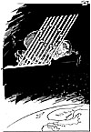

|
Dagens Inge:  Inge-galleri Tidligere artikler |
Dagens ledere Morgen: Langt frem for Norden Selvros |
Aften: Butikkdøden må motvirkes |
|
Kommentar KRONGLETE: Sjelden har en valgseier en så bitter ettersmak som den Folkepartiet i Spania nå opplever. PER ANDERS MADSEN Artikkelforfatteren er Aftenpostens korrespondent i Roma.
"Lykkepille" på blå resept
|
I dag Ærekrenket TRIKK TIL FORDERVELSE: Mange "pene mennesker" blir halvkriminelle i god tro. ASTRID NØKLEBYE HEIBERG Psykiater, president i Norges Røde Kors.
| |
|
Kronikk Skal Holmenkollen vises vinterveien? OLAV CHRISTENSEN Ønsket om å gjøre Lysgårdsbakkene på Lillehammer til vårt nye nasjonale senter for hoppsport vitner om en skremmende mangel på dømmekraft og tradisjonssans, mener Olav Christensen, som er stipendiat i folkloristikk, og har skrevet bok om "vinterveien til et nasjonalt selvbilde" (1993). Holmenkollen er den konkrete manifestasjon av vår felles identitet som nordmenn, skriver han.
|
||